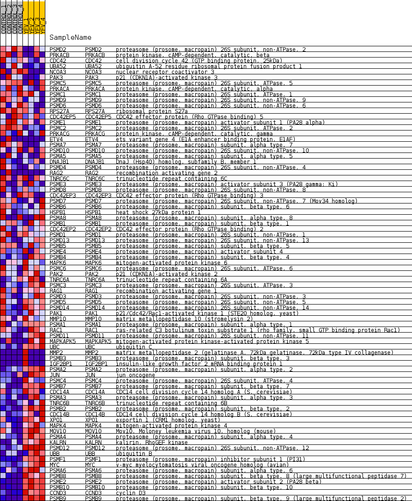
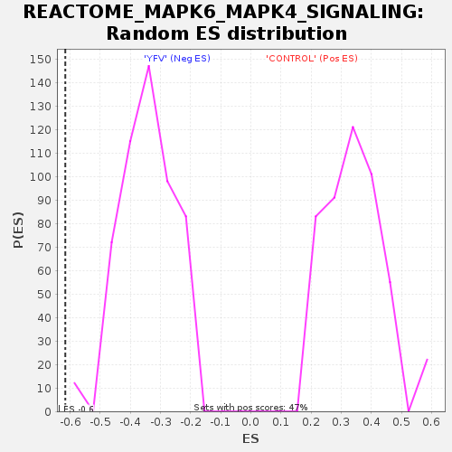

Profile of the Running ES Score & Positions of GeneSet Members on the Rank Ordered List
| Dataset | MATRIZ_GSE99081_collapsed_to_symbols.gsea_CLASE_99081.cls#CONTROL_versus_YFV |
| Phenotype | gsea_CLASE_99081.cls#CONTROL_versus_YFV |
| Upregulated in class | YFV |
| GeneSet | REACTOME_MAPK6_MAPK4_SIGNALING |
| Enrichment Score (ES) | -0.6158954 |
| Normalized Enrichment Score (NES) | -1.7953389 |
| Nominal p-value | 0.0 |
| FDR q-value | 0.025957 |
| FWER p-Value | 0.135 |
| SYMBOL | TITLE | RANK IN GENE LIST | RANK METRIC SCORE | RUNNING ES | CORE ENRICHMENT | |
|---|---|---|---|---|---|---|
| 1 | PSMD2 | proteasome (prosome, macropain) 26S subunit, non-ATPase, 2 | 711 | 0.738 | -0.0249 | No |
| 2 | PRKACB | protein kinase, cAMP-dependent, catalytic, beta | 1471 | 0.535 | -0.0580 | No |
| 3 | CDC42 | cell division cycle 42 (GTP binding protein, 25kDa) | 1936 | 0.493 | -0.0740 | No |
| 4 | UBA52 | ubiquitin A-52 residue ribosomal protein fusion product 1 | 1969 | 0.488 | -0.0633 | No |
| 5 | NCOA3 | nuclear receptor coactivator 3 | 2138 | 0.463 | -0.0617 | No |
| 6 | PAK3 | p21 (CDKN1A)-activated kinase 3 | 2295 | 0.441 | -0.0600 | No |
| 7 | PSMC5 | proteasome (prosome, macropain) 26S subunit, ATPase, 5 | 3127 | 0.329 | -0.1029 | No |
| 8 | PRKACA | protein kinase, cAMP-dependent, catalytic, alpha | 3274 | 0.313 | -0.1038 | No |
| 9 | PSMC1 | proteasome (prosome, macropain) 26S subunit, ATPase, 1 | 3697 | 0.267 | -0.1230 | No |
| 10 | PSMD9 | proteasome (prosome, macropain) 26S subunit, non-ATPase, 9 | 3732 | 0.263 | -0.1183 | No |
| 11 | PSMD6 | proteasome (prosome, macropain) 26S subunit, non-ATPase, 6 | 3986 | 0.243 | -0.1277 | No |
| 12 | RPS27A | ribosomal protein S27a | 4134 | 0.232 | -0.1308 | No |
| 13 | CDC42EP5 | CDC42 effector protein (Rho GTPase binding) 5 | 4258 | 0.223 | -0.1326 | No |
| 14 | PSME1 | proteasome (prosome, macropain) activator subunit 1 (PA28 alpha) | 4391 | 0.212 | -0.1353 | No |
| 15 | PSMC2 | proteasome (prosome, macropain) 26S subunit, ATPase, 2 | 4826 | 0.173 | -0.1577 | No |
| 16 | PRKACG | protein kinase, cAMP-dependent, catalytic, gamma | 4858 | 0.170 | -0.1552 | No |
| 17 | ETV4 | ets variant gene 4 (E1A enhancer binding protein, E1AF) | 4982 | 0.160 | -0.1586 | No |
| 18 | PSMA7 | proteasome (prosome, macropain) subunit, alpha type, 7 | 5238 | 0.134 | -0.1710 | No |
| 19 | PSMD10 | proteasome (prosome, macropain) 26S subunit, non-ATPase, 10 | 5332 | 0.127 | -0.1734 | No |
| 20 | PSMA5 | proteasome (prosome, macropain) subunit, alpha type, 5 | 5659 | 0.102 | -0.1910 | No |
| 21 | DNAJB1 | DnaJ (Hsp40) homolog, subfamily B, member 1 | 5884 | 0.085 | -0.2026 | No |
| 22 | PSMD4 | proteasome (prosome, macropain) 26S subunit, non-ATPase, 4 | 6348 | 0.049 | -0.2300 | No |
| 23 | RAG2 | recombination activating gene 2 | 6350 | 0.049 | -0.2288 | No |
| 24 | TNRC6C | trinucleotide repeat containing 6C | 6571 | 0.034 | -0.2415 | No |
| 25 | PSME3 | proteasome (prosome, macropain) activator subunit 3 (PA28 gamma; Ki) | 6661 | 0.029 | -0.2463 | No |
| 26 | PSMD8 | proteasome (prosome, macropain) 26S subunit, non-ATPase, 8 | 6710 | 0.026 | -0.2486 | No |
| 27 | CDC42EP3 | CDC42 effector protein (Rho GTPase binding) 3 | 6730 | 0.025 | -0.2491 | No |
| 28 | PSMD7 | proteasome (prosome, macropain) 26S subunit, non-ATPase, 7 (Mov34 homolog) | 6854 | 0.018 | -0.2563 | No |
| 29 | PSMB6 | proteasome (prosome, macropain) subunit, beta type, 6 | 7048 | 0.008 | -0.2680 | No |
| 30 | HSPB1 | heat shock 27kDa protein 1 | 7117 | 0.005 | -0.2721 | No |
| 31 | PSMA8 | proteasome (prosome, macropain) subunit, alpha type, 8 | 9584 | -0.007 | -0.4245 | No |
| 32 | PSMB1 | proteasome (prosome, macropain) subunit, beta type, 1 | 9745 | -0.014 | -0.4341 | No |
| 33 | CDC42EP2 | CDC42 effector protein (Rho GTPase binding) 2 | 9768 | -0.015 | -0.4351 | No |
| 34 | PSMD1 | proteasome (prosome, macropain) 26S subunit, non-ATPase, 1 | 10102 | -0.030 | -0.4549 | No |
| 35 | PSMD13 | proteasome (prosome, macropain) 26S subunit, non-ATPase, 13 | 10422 | -0.053 | -0.4732 | No |
| 36 | PSMB5 | proteasome (prosome, macropain) subunit, beta type, 5 | 10473 | -0.058 | -0.4748 | No |
| 37 | PSME4 | proteasome (prosome, macropain) activator subunit 4 | 10799 | -0.085 | -0.4928 | No |
| 38 | PSMB4 | proteasome (prosome, macropain) subunit, beta type, 4 | 10839 | -0.088 | -0.4929 | No |
| 39 | MAPK6 | mitogen-activated protein kinase 6 | 10929 | -0.096 | -0.4959 | No |
| 40 | PSMC6 | proteasome (prosome, macropain) 26S subunit, ATPase, 6 | 11010 | -0.102 | -0.4982 | No |
| 41 | PAK2 | p21 (CDKN1A)-activated kinase 2 | 11105 | -0.110 | -0.5012 | No |
| 42 | TNRC6A | trinucleotide repeat containing 6A | 11318 | -0.131 | -0.5109 | No |
| 43 | PSMC3 | proteasome (prosome, macropain) 26S subunit, ATPase, 3 | 11528 | -0.149 | -0.5200 | No |
| 44 | RAG1 | recombination activating gene 1 | 11769 | -0.171 | -0.5304 | No |
| 45 | PSMD3 | proteasome (prosome, macropain) 26S subunit, non-ATPase, 3 | 11846 | -0.178 | -0.5305 | No |
| 46 | PSMD5 | proteasome (prosome, macropain) 26S subunit, non-ATPase, 5 | 11911 | -0.185 | -0.5297 | No |
| 47 | PSMD14 | proteasome (prosome, macropain) 26S subunit, non-ATPase, 14 | 11924 | -0.186 | -0.5256 | No |
| 48 | PAK1 | p21/Cdc42/Rac1-activated kinase 1 (STE20 homolog, yeast) | 12624 | -0.256 | -0.5622 | No |
| 49 | MMP10 | matrix metallopeptidase 10 (stromelysin 2) | 12632 | -0.258 | -0.5560 | No |
| 50 | PSMA1 | proteasome (prosome, macropain) subunit, alpha type, 1 | 12891 | -0.287 | -0.5645 | No |
| 51 | RAC1 | ras-related C3 botulinum toxin substrate 1 (rho family, small GTP binding protein Rac1) | 12989 | -0.299 | -0.5628 | No |
| 52 | PSMD11 | proteasome (prosome, macropain) 26S subunit, non-ATPase, 11 | 13564 | -0.374 | -0.5886 | No |
| 53 | MAPKAPK5 | mitogen-activated protein kinase-activated protein kinase 5 | 13936 | -0.430 | -0.6005 | No |
| 54 | UBC | ubiquitin C | 14182 | -0.479 | -0.6032 | Yes |
| 55 | MMP2 | matrix metallopeptidase 2 (gelatinase A, 72kDa gelatinase, 72kDa type IV collagenase) | 14388 | -0.500 | -0.6030 | Yes |
| 56 | PSMB3 | proteasome (prosome, macropain) subunit, beta type, 3 | 14438 | -0.500 | -0.5930 | Yes |
| 57 | IGF2BP1 | insulin-like growth factor 2 mRNA binding protein 1 | 14449 | -0.500 | -0.5807 | Yes |
| 58 | PSMA2 | proteasome (prosome, macropain) subunit, alpha type, 2 | 14672 | -0.535 | -0.5806 | Yes |
| 59 | JUN | jun oncogene | 14676 | -0.535 | -0.5669 | Yes |
| 60 | PSMC4 | proteasome (prosome, macropain) 26S subunit, ATPase, 4 | 14766 | -0.557 | -0.5580 | Yes |
| 61 | PSMB7 | proteasome (prosome, macropain) subunit, beta type, 7 | 14794 | -0.565 | -0.5451 | Yes |
| 62 | CDC14A | CDC14 cell division cycle 14 homolog A (S. cerevisiae) | 14804 | -0.568 | -0.5309 | Yes |
| 63 | PSMA3 | proteasome (prosome, macropain) subunit, alpha type, 3 | 14958 | -0.609 | -0.5246 | Yes |
| 64 | TNRC6B | trinucleotide repeat containing 6B | 15020 | -0.630 | -0.5121 | Yes |
| 65 | PSMB2 | proteasome (prosome, macropain) subunit, beta type, 2 | 15120 | -0.662 | -0.5011 | Yes |
| 66 | CDC14B | CDC14 cell division cycle 14 homolog B (S. cerevisiae) | 15237 | -0.704 | -0.4901 | Yes |
| 67 | XPO1 | exportin 1 (CRM1 homolog, yeast) | 15270 | -0.722 | -0.4733 | Yes |
| 68 | MAPK4 | mitogen-activated protein kinase 4 | 15299 | -0.742 | -0.4559 | Yes |
| 69 | MOV10 | Mov10, Moloney leukemia virus 10, homolog (mouse) | 15324 | -0.754 | -0.4378 | Yes |
| 70 | PSMA4 | proteasome (prosome, macropain) subunit, alpha type, 4 | 15508 | -0.833 | -0.4276 | Yes |
| 71 | KALRN | kalirin, RhoGEF kinase | 15511 | -0.834 | -0.4061 | Yes |
| 72 | PSMD12 | proteasome (prosome, macropain) 26S subunit, non-ATPase, 12 | 15525 | -0.844 | -0.3851 | Yes |
| 73 | UBB | ubiquitin B | 15642 | -0.918 | -0.3685 | Yes |
| 74 | PSMF1 | proteasome (prosome, macropain) inhibitor subunit 1 (PI31) | 15701 | -0.986 | -0.3465 | Yes |
| 75 | MYC | v-myc myelocytomatosis viral oncogene homolog (avian) | 15733 | -1.017 | -0.3222 | Yes |
| 76 | PSMA6 | proteasome (prosome, macropain) subunit, alpha type, 6 | 15762 | -1.053 | -0.2966 | Yes |
| 77 | PSMB8 | proteasome (prosome, macropain) subunit, beta type, 8 (large multifunctional peptidase 7) | 16014 | -1.655 | -0.2693 | Yes |
| 78 | PSME2 | proteasome (prosome, macropain) activator subunit 2 (PA28 beta) | 16061 | -1.905 | -0.2229 | Yes |
| 79 | PSMB10 | proteasome (prosome, macropain) subunit, beta type, 10 | 16150 | -2.694 | -0.1586 | Yes |
| 80 | CCND3 | cyclin D3 | 16152 | -2.722 | -0.0882 | Yes |
| 81 | PSMB9 | proteasome (prosome, macropain) subunit, beta type, 9 (large multifunctional peptidase 2) | 16195 | -3.614 | 0.0027 | Yes |

